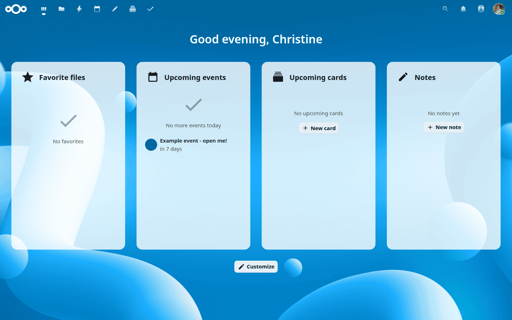
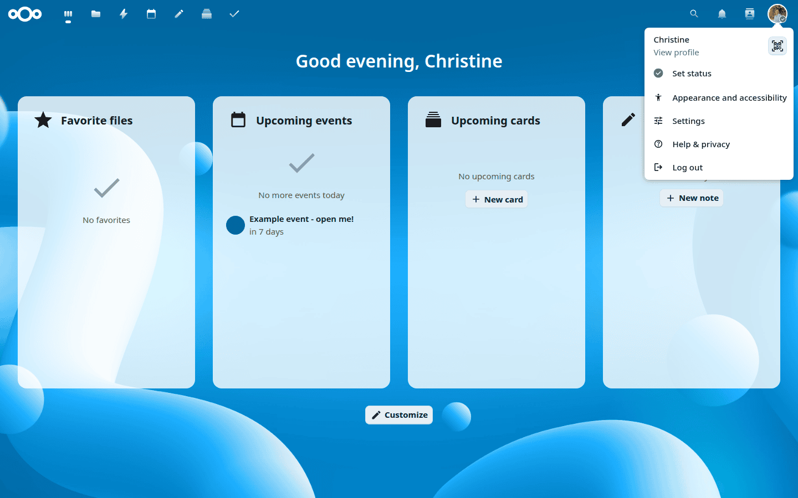
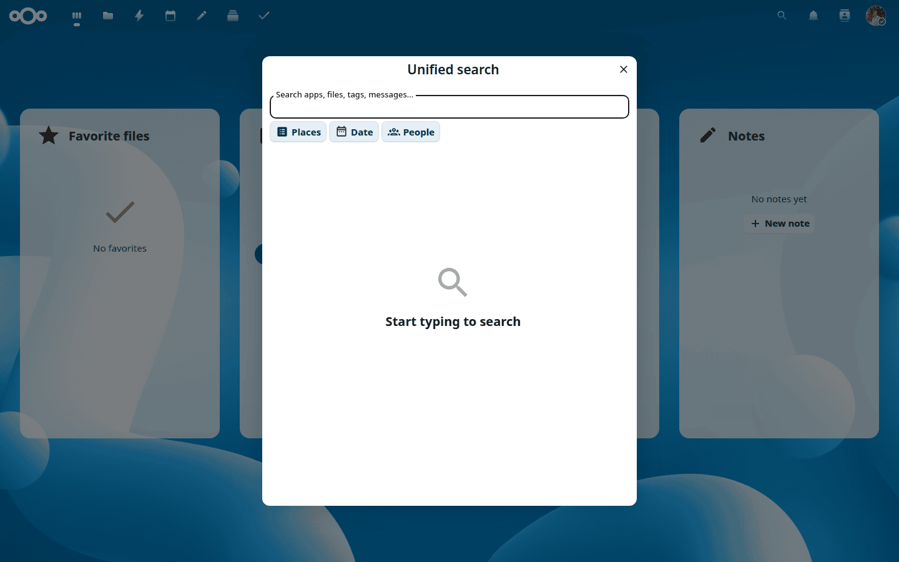

The Nextcloud web interface
Open your Nextcloud server’s URL in any web browser and log in with your account name (or email address) and password:

You can also log in using a passkey or hardware security key by clicking Log in with a device.
Requeriments del navegador web
For the best experience, use the latest version of one of these browsers:
Google Chrome / Chromium
Mozilla Firefox
Apple Safari
Microsoft Edge
Nota
Not all versions are supported. Nextcloud targets browsers meeting the minimum usage threshold.
The Dashboard
After logging in, Nextcloud opens the Dashboard — a customisable overview of your most important activity: upcoming calendar events, unread messages, recent files, and more.

Use the Customise button at the bottom of the page to add, remove, or rearrange widgets to suit your workflow.
Settings and profile
Click your profile picture to access your account options:

From this menu you can:
View and edit your profile
Set your online status
Change appearance and accessibility settings
Open your personal Settings page
Access help and privacy information
Log out
Unified search
Click the search icon in the navigation bar (or press Ctrl+F) to open the unified search modal:

Unified search looks across all your installed apps — files, calendar events, messages, contacts, and more — at once. Results are grouped by app so you can quickly see where a match was found.
Use the filter chips to narrow results:
Places — limit the search to a specific app, such as Files or Calendar.
Date — filter by time period (today, last 7 days, last 30 days, this year, or a custom range).
People — show only results related to a specific person.